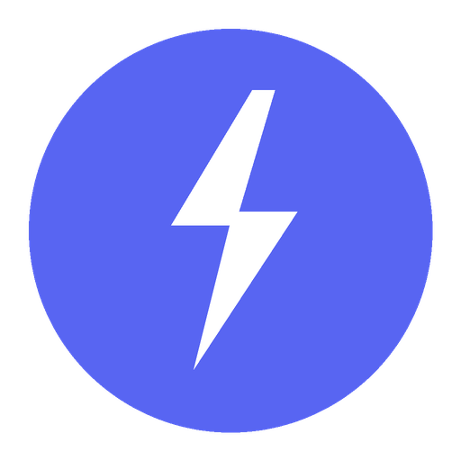

Versão 1.1.1 Oficial
Auto Key Clicker
Multi-Screen & Multi-Key Background Auto-Clicker projetado para jogos e MMOs. Leve, rápido e portátil.
F6
Tecla Única Configurável: Aperte para Iniciar / Aperte para Parar
Anti-Collision
Evita que duas teclas sejam disparadas no mesmo microsegundo com fila e sequenciamento inteligente.
Tubinhos Animados
Indicador visual de cooldown: Azul recarregando, Amarelo aguardando o delay de segurança e Verde no clique.
Modo Mini HUD
Interface compacta que pode ficar fixada em cima do jogo sem atrapalhar a sua visão de tela.
Background & Foreground
Envie teclas diretamente para a janela do jogo em segundo plano sem perder o foco ou o mouse.